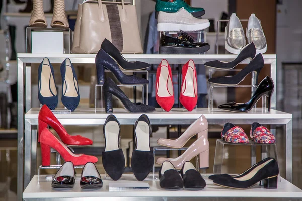

SOBRE CALZADO HELEN
Los zapatos, como el resto de las prendas, también se diseñan atendiendo a fines estéticos y/u ortopédicos. El diseño de los zapatos ha variado enormemente a través del tiempo y de cultura en cultura, con su apariencia originalmente ligada a sus funciones. Adicionalmente, la moda ha dictado frecuentemente muchos elementos de diseño, como la altura de los tacones y el tejido de estos.
Nuestra Mision: El calzado contemporáneo varía ampliamente en estilo, complejidad y costo. Una sandalia básica puede consistir en una suela delgada y un amarre simple. Los zapatos de moda pueden estar hechos de materiales muy caros en construcciones complejas y vendidos por miles de dólares el par. Otros zapatos son para propósitos muy específicos, tales como los diseñados para escalada de montañas o esquiar.
Empezaron a aparecer diseñadores especializados en el diseño de calzado que mantienen con renombre sus marcas y firmas.En el siglo xxi, el concepto de ergonomía revolucionó aún más el desarrollo de zapatos altamente tecnificados como es el caso de las zapatillas deportivas, el zapato formal y el zapato ligero para climas cálidos. Este desarrollo vino de la mano con la tecnología espacial donde aparecieron zapatos con distintos tipos de diseños de suelas traccionables que fueron aplicados a los zapatos deportivos de alta gama.
Nuestra Ubicacion
Nuestro taller esta ubicado en el Norte de la ciudad de Guayaquil via Daule en Bastion Popular blq.2
DIFERENCIALES
- Atencion Personalizada a los clientes
- Localizacion
- Profecionales calificados
- Modelos a su gusto
- Puntualidad
- En buen estado